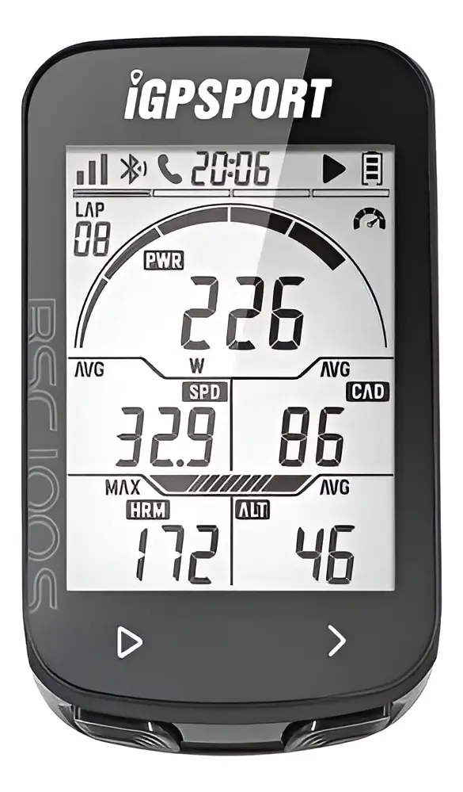

Ciclocomputadores
GPS · SENSORES · APP
IGPSPORT

BSC100
Ciclocomputador con pantalla de alto contraste, compatible con sensores externos de potencia, cadencia y pulso.
- Pantalla monocromática LCD anti-reflejo, visible bajo sol directo
- Conectividad ANT+ y Bluetooth para sensores externos
- Muestra potencia (W), cadencia (RPM), FC y velocidad en tiempo real
- Batería de larga duración (hasta 30+ horas)
- Resistente a salpicaduras (IPX6)
Consultar precio
WhatsApp
BSC200S
GPS con navegación por ruta y conectividad para sensores de cadencia, potencia y pulso.
- GPS integrado con navegación de ruta en pantalla (flechas de giro)
- Pantalla a color de 2.2", legible con sol
- Registra velocidad, distancia, altitud y mapa de recorrido
- Compatible con sensores ANT+/Bluetooth (cadencia, potencia, FC)
- Sincronización con app iGPSPORT (Strava, Komoot, etc.)
Consultar precio
WhatsApp
GEOID

CC600
Ciclocomputador GPS con pantalla a color y mapa de ruta en tiempo real.
- Pantalla táctil/botones a color con mapa de navegación turn-by-turn
- Muestra velocidad, promedio, máxima y distancia en vivo
- GPS + GLONASS para ubicación precisa incluso en zonas boscosas
- Compatible con sensores externos ANT+/Bluetooth
- Carga vía USB-C, autonomía para rutas largas
Consultar precio
WhatsApp

CC700
Versión superior de GEOID, con pantalla a color más grande y navegación avanzada por mapas.
- Pantalla a color de mayor resolución con mapas detallados de calles
- Navegación turn-by-turn con nombre de vías en tiempo real
- Rumbo GPS (heading) y velocidad instantánea siempre visibles
- Compatibilidad con múltiples sensores externos simultáneos
- Ideal para rutas largas o desconocidas gracias a sus mapas
Consultar precio
WhatsApp